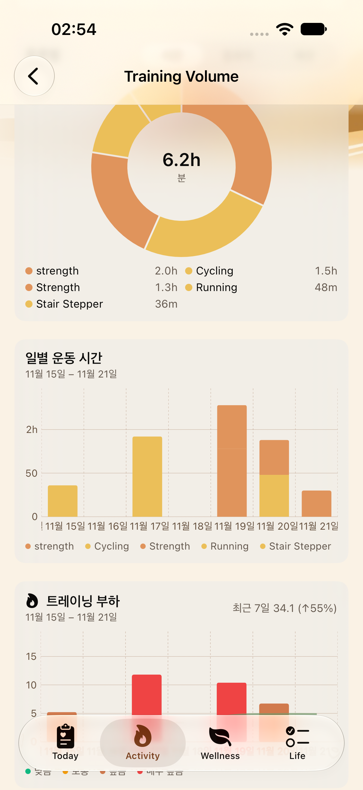

전체 디자인맵
R07 · A06 훈련 부하 기간 비교
iPhone 18 Pro · iOS 27.2 · 한국어 · 밝음 · 2026-11-21. 코드 8a0d632d7, 기준 main 9d2f82398.

제공된 ChartInteractionRegressionUITests/testTrainingLoadChartShowsRollingSevenDaySummaryAndCapturesA06() 통과 첨부 원본. 화면에서 최근 7일 요약과 훈련 부하 차트 카드 일부를 확인할 수 있다. 차트 하단은 탭 바에 가깝고 다른 상태까지 검증하지 않는다.
기기·코드·해시·검증 범위 · XCTest 첨부 출처
새 캡처 대기
- iPad A06
- iPhone Duo 접힘 A06
- iPhone Duo 펼침 A06
기존 각 기기의 A06 이미지는 이번 R07 구현의 증거가 아니다.